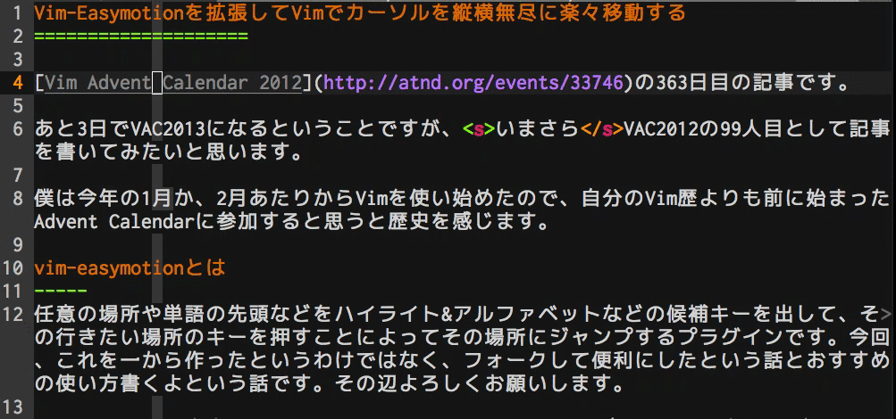
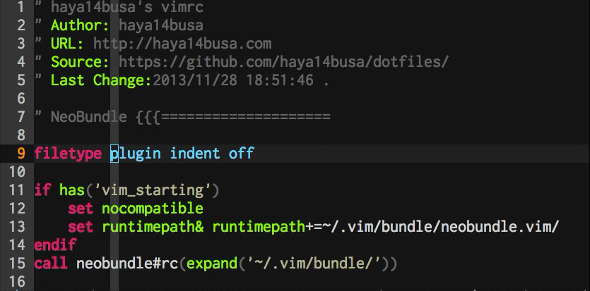
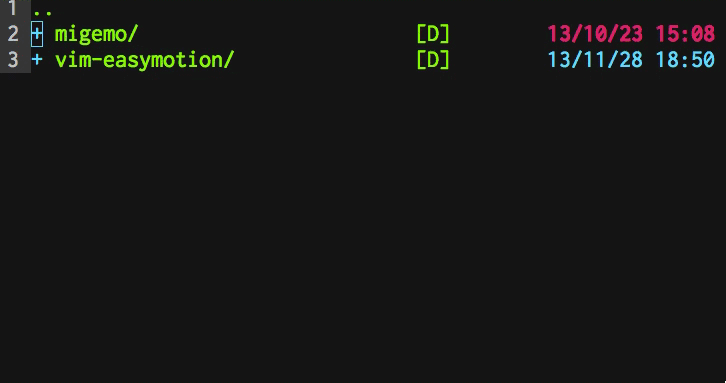
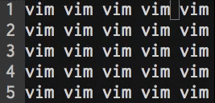

Vim Advent Calendar 2012の363日目の記事です。 昨日はthincaさんの本当にキモい Vim script – . 演算子編 – 永遠に未完成でした。
あと3日でVAC2013になるということですが、いまさらVAC2012の99人目として記事を書いてみたいと思います。
僕は今年の1月か、2月あたりからVimを使い始めたので、自分のVim歴よりも前に始まったAdvent Calendarに参加すると思うと歴史を感じます。すごい。
Vimで最初に習うのはhjklによるカーソル移動です。
その後w,bなどたくさんの移動コマンドを覚えると思います。
またVimを使っているとき、その7,8割はカーソル移動してるんじゃないでしょうか???
カーソル移動大事。
ということでカーソル移動系プラグインであるvim-easymotionの話をします。
vim-easymotionとは
任意の場所や単語の先頭などをハイライト&アルファベットなどの候補キーを出して、その行きたい場所のキーを押すことによってその場所にジャンプするプラグインです。今回、これを一から作ったというわけではなく、フォークして便利にしたという話とおすすめの使い方書くよという話です。その辺よろしくお願いします。

もっとvim-easymotionしよう
Github: haya14busa/vim-easymotion
Install
NeoBundle 'haya14busa/vim-easymotion'
なるべく本家Easymotionからの移行時にびっくりしないよう、新規機能は基本的にデフォルトでオフになっていて、オンなのは候補の2キー表示と双方向サーチである<Leader>sの追加、バグフィックスあたりだけなのでぜひ気軽に試してフィードバックorプルリクください。
以下面倒なのでデフォルトのprefixキーである<Leader><Leader>を<Leader>に変更しているとして解説します。(特に機能名がないので機能をMappingで表したりします)
よくわかる拡張機能
- 最初から候補画面で2キー表示する!
- fやFの双方向バージョンが追加され、画面内ならどこでも飛べる!(
<Leader>s) - Smartcase機能でもっと楽々移動!
- 1文字migemo実装で日本語でもeasymotion!
- その他もろもろ
- バグフィックス
- マルチバイトバグ
- バッファ名バグ(今までuniteやref-vimでバグってました)
- その他いろいろ
最初から2キー表示する!
おそらくVim-Easymotionを使ったことがある人であれば必ず思うであろう、
「2回キー押すとき面倒くさい…」
これが改善されています。2回以上押さなければならない場合は最初から2つ分表示されてストレス90％減です(当社比)

双方向サーチでカーソル位置を気にせず使う
これも使ったことがある人なら面倒くさいと思ったことがあるんじゃないでしょうか？
<Leader>fか<Leader>Fのどっち使うか決めるの面倒くさい。
飛びたい場所が現在位置の上下近くだったりすると意外とめんどくさくて脳のリソース消費します。これが<Leader>sで双方向サーチするという新機能で解決です。また、ひとつのマッピングでほぼすべての移動を補えるようになるところが見逃せないポイント。
Smartcaseでもっと楽々移動したい!
正直Shift押すのも面倒くさい。
vimrc
" smartcase
let g:EasyMotion_smartcase = 1
上記の設定で<Leader>svでvimにもVimにもマッチして移動できます。楽。勿論smartcaseなので<Leader>sVだとVimだけにマッチします。
1文字migemo実装で日本語でもeasymotion!
migemo一回使ってみたら、日本語移動でかなり便利だったのでeasymotionでも実装したいなーと思っていました。そこで探してみると、rhysd/clever-f.vimですでに擬似migemo実装されてる事案があったのでclever-fの作者であるLindanさんに許可とってパク…参考にして実装しました。
cmigemoなしでも動きます。
vimrc
let g:EasyMotion_use_migemo = 1
Vimで日本語書くときになかなかいいです。
注意事項として候補が多すぎたりスペック低かったりすると、ちょっと遅くてイラッとするかもしれません…もうちょっと改善したい。ちなみに<Leader>wなど単語移動モーション使うと必ずしも行きたい場所には行けませんが移動はかなりサクッと行きます。
だいたい主な拡張機能はこんな感じです。
以下元からあった機能も適当に解説しながらなんやかんやしていきます。
Find Motion
新機能である<Leader>sや<Leader>fなどがこのFind Motionに当たります
s{char} - 新機能: 画面内すべてを対象として{char}にマッチ
f{char} - カーソルより右側を対象として{char}にマッチ
F{char} - カーソルより左側を対象として{char}にマッチ
t{char} - カーソルより右側を対象として{char}の1文字手前にマッチ
T{char} - カーソルより左側を対象として{char}の1文字後にマッチ
おそらく基本的に使うのは<Leader>s{char}で、オペレーション待機モードで<Leader>t{char},<Leader>T{char}使うかもといった感じです。
おすすめは<Leader>s{char}が便利すぎるので、sキーをマップしてs{char}で動作するようにするとたった3(or4)キー(s{char}{target})で任意の場所に一瞬で移動できるので非常に捗ります。
vimrc
" もっともよく使うであろう'<Leadr><Leader>s'motion を`s`に割り当てます"
nmap s <Plug>(easymotion-s)
vmap s <Plug>(easymotion-s)
omap z <Plug>(easymotion-s) " surround.vimとかぶるので`z`
Word Motion
w - カーソルより右側の単語(word)の先頭にマッチ
W - カーソルより右側の単語(WORD)の先頭にマッチ
b - カーソルより左側の単語(word)の先頭にマッチ
B - カーソルより左側の単語(WORD)の先頭にマッチ
e - カーソルより右側の単語(word)の後ろにマッチ
E - カーソルより右側の単語(WORD)の後ろにマッチ
ge - カーソルより左側の単語(word)の後ろにマッチ
gE - カーソルより左側の単語(WORD)の後ろにマッチ
S - 新機能: 画面内すべてを対象として単語の先頭にマッチ
好みによりますが、Findモーションよりも移動したいのは基本単語の先頭だし、Wordモーションのほうが好きという方もいると思います。こちらのほうがキー入力が抑えられます。
またもう一つの優位点としてターゲットとして入力できない単語の移動(日本語など)で使えます。
あと堂々と
Search Motion
n - カーソルより右側の検索結果にマッチ
N - カーソルより左側の検索結果にマッチ
意外と使われてないんじゃないかと思われる検索結果にマッチする機能です。/vim<CR>などしてから<Leader>nor<Leader>Nを押すと検索結果がハイライトされて移動できます。
検索してからマッチするところが多すぎてn連打つらい！というのが解消できます。僕はあまり使っていませんが
JK Motion (行移動)
個人的に<Leader>sの次に気に入っているのが、Easymotion#JKモーションという行移動機能です。
もう一度言います。JK Motionです！
<Leader>jでカーソルより下の行、<Leader>kで上の行に飛べます。だいたいこれくらいかなーと適当に10jしてから違ってたら調節というわずわらしさとはおさらばです。
また個人的に、UniteやVimfiler、Gundo、Gitvなどなどの行によって何かしら行うUIを持つPluginとJKモーションの親和性が高くておすすめです。
Vimfilerでeasymotion 
ちなみにVimのset relativenumberを使うとデフォルトでも似たようなことができます。
参考: ‘set relativenumber’ で Vim のカーソルの縦移動とかを改善する – 反省はしても後悔はしない
こちらだとデフォルトで使用できるのが強みですが、数字がアルファベットよりも打ちにくいこと、各種プラグインで行番号が表示されていない時に役に立たないのが少し痛いですね。そんなときでも使えるJKモーション。おすすめです。
それと、JK Motionはデフォルトでは行の先頭に移動するのですが、カラムが同じ位置に飛ぶようになるオプションがつきました。(よりデフォルトのj,kの挙動に近づきます)
vimrc
let g:EasyMotion_startofline=0
<C-v>の矩形選択時などにこの設定をしておくと幸せになります
Example: 
まとめvimrcの例
“ vim-eazymotion ” デフォルトだと<Leader><Leader>となってるprefixキーを変更 let g:EasyMotion_leader_key = ‘;’
“ 候補選択: 候補が最初から2キー表示されるので大文字や打ちにくい文字は全面的に消す ” なお、最後の数文字が2キーの時の最初のキーになるので打ちやすいものを選ぶとよさそうです。 let g:EasyMotion_keys=‘hklyuiopnm,qwertzxcvbasdgjf;’
“ 拡張版機能
“ もっともよく使うであろう'<Leadr><Leader>s'motion をsに割り当て nmap s <Plug>(easymotion-s) vmap s <Plug>(easymotion-s) omap z <Plug>(easymotion-s) ” surround.vimとかぶるのでz
“ keep cursor column let g:EasyMotion_startofline = 0
“ smartcase let g:EasyMotion_smartcase = 1
“ Migemo let g:EasyMotion_use_migemo = 1
雑感
まとめると、キーマップすれば s{char}{target}の3キーで任意の場所に飛べる ので捗っておすすめってことです。おそらく、他のプラグインとしても画面内全体を対象として、この数のキーで移動できるのはほぼ最小じゃないでしょうか。
ujihisa.vim#3のderisさんのスライドHow to move cursor more effectively(for Beginner)や:h motion.txtを読んでるとたくさん移動コマンドがありすぎて正直考えるの面倒です。これを画面内移動だけでも一つに集約できるとかなり楽な感じがしませんか?
ただ、勿論easymotion好きじゃないって人もいて欠点として
- {target}がVimから提示されるのを待つしかない
- (思考の流れを止めてしまう)
- デフォルトのVimモーションの挙動と全然違う
- clever-fやvim-sneakはデフォルトの挙動を拡張してるという感が強い
- リピートめんどい
- そもそもリピートせずに飛ぶというのがコンセプトですが
- 近くに移動する場合に近い割にキー入力多くて特にめんどくさい
この辺が考えられます。他のプラグインと併用するなどして自分にあったカーソル移動を考えるとよさそうです。
そしてこのフォークしたeasymotion,実はまだまだ改善途中といったところで、Vim Scriptアンチパターンのようなものに当てはまっている部分もほとんど直せてません。すいません。ぜひぜひ、アドバイスとプルリクお待ちしています。みんなでカーソル移動を考えましょう。
VAC2012
明日のVim Advent Calendar 2012の364日目の記事を新規の人が書くと100人目のようです。興味ある方はぜひ書くとみなさん喜ぶと思います。